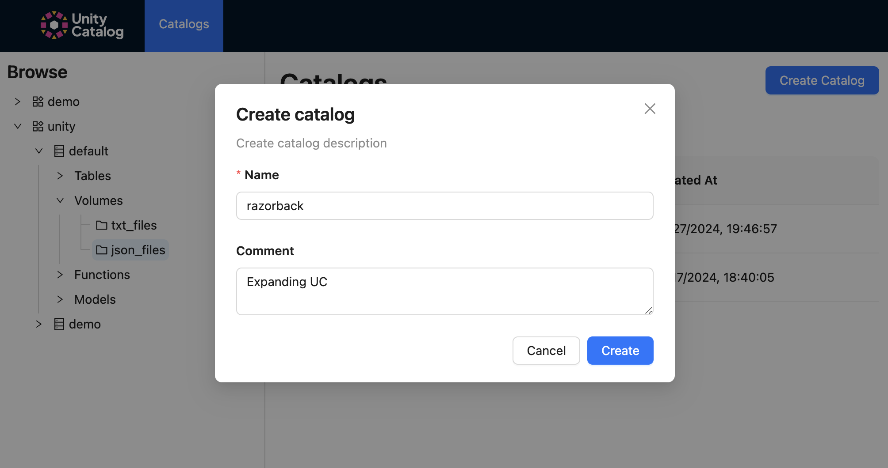

Unity Catalog UI¶
The Unity Catalog UI allows you to interact with a Unity Catalog server to view or create data and AI assets.

Start Unity Catalog UI locally¶
To use the Unity Catalog UI, start a new terminal and ensure you have already started the UC server
(e.g., ./bin/start-uc-server)
To start the UI locally, run the following commands to start yarn
cd /ui
yarn install
yarn start
Assets¶
Catalogs¶
The following steps show how you can create, describe, and delete UC catalogs.
After clicking the top Catalog button, you will see your list of catalogs. To create a catalog, click the Create Catalog button to the right.

Specify the name and include any comments when creating your catalog.

Click the horizontal three dots next to Create Schema button to delete your catalog.

Schemas¶
The following steps show how you can create, describe, and delete UC schemas.
After clicking on any catalog, the main dialog contains the list of available schemas. Click the Create Schemas button to the right to create a new schema.

Specify the name and include any comments when creating your schema.

Click the horizontal three dots to the right to delete your schema.

Tables¶
The following steps show how you can view your UC table metadata and descriptions.
Click on the schema (e.g., unity.demo) to view its tables.

Click on the schema (e.g., unity.default) to view its tables.

Click on any table (e.g., unity.default.marksheet) to view its metadata. You also have the option to delete the
table via the three horizontal dots on the right.

Volumes¶
The following steps show how you can view your UC volume metadata and descriptions.
Using the left-hand nav bar, click on catalog > schema (e.g., unity > default) to view the available volumes.

Click on the volume (e.g., unity.default.txt_files) to view its metadata. You have the option to delete it by
click on the three horizontal dots to the right.

Click the edit button to change its descripton.

Functions¶
The following steps show how you can view your UC functions metadata and descriptions.
Using the left-hand nav bar, click on catalog > schema (e.g., unity > default) to view the available
functions.

Click on the volume (e.g., unity.default.lowercase) to view its metadata. You have the option to delete it by
click on the three horizontal dots to the right.

Models¶
The following steps show how you can list, describe and delete your UC models.
After clicking on any schema > models, the main dialog contains the list of available models. Click the horizontal three dots button to the right to create a new model.

Click the edit button to change its descripton.

Specify the name and include any comments when creating your model.

Click the edit button to change its descripton.

Click the horizontal three dots to the right to delete your model.

Model Versions¶
The following steps show how you can view your UC model versions and their metadata.
Using the left-hand nav bar, click on catalog > schema (e.g., unity > default) to view the available models.
Click on the model (e.g., unity.default.iris) to view its version(s).

Click on the model version to view its details.

Click the edit button to change its descripton.

Click the horizontal three dots to the right to delete your model version.

Conclusion¶
The Unity Catalog UI provides a comprehensive interface for managing data and AI assets. By following the steps outlined in this guide, you can effectively create, describe, and delete catalogs, schemas, tables, volumes, functions, models, and model versions. Ensure that you have the necessary prerequisites installed and follow the provided commands to start the UI locally. This documentation aims to help you navigate and utilize the Unity Catalog UI efficiently.